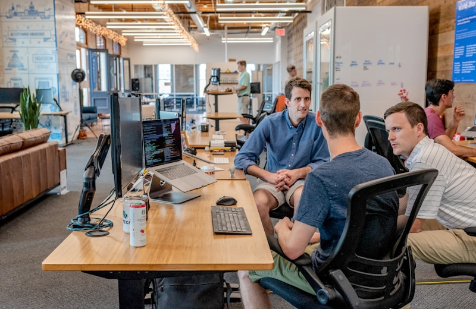
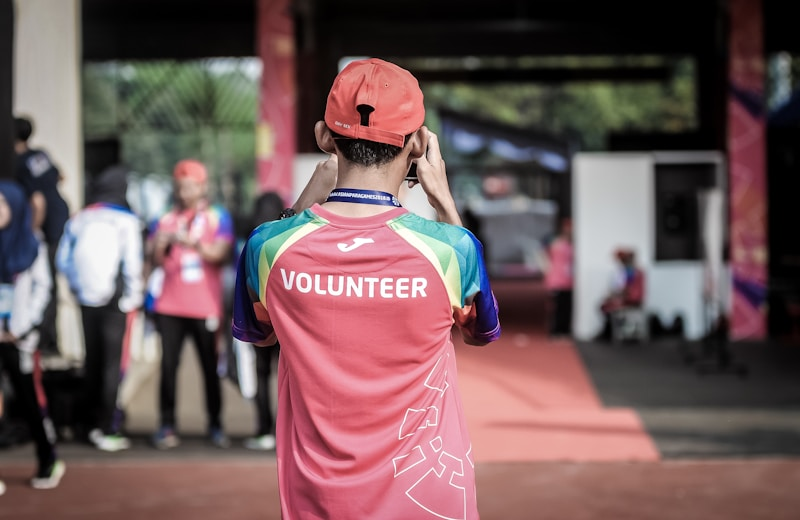
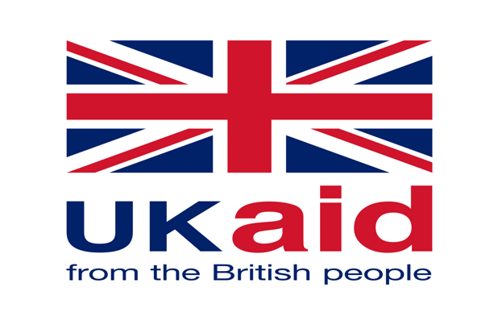
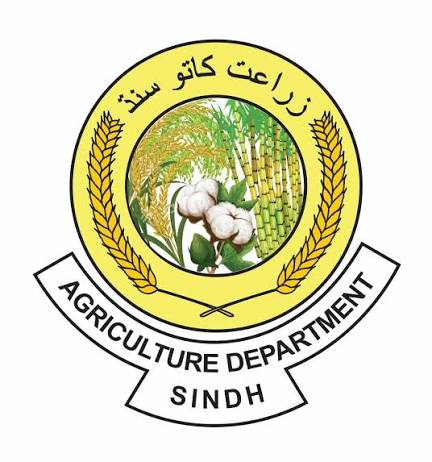
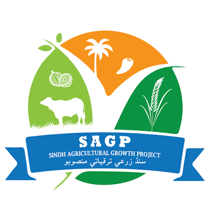
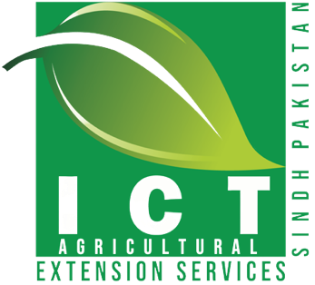

Welcome to PRD Consultants
Welcome to PRD Consultants (Private) Limited. As development challenges continue to evolve, organizations need trusted partners who can combine technical expertise with practical implementation experience. We bring together global perspectives, local knowledge, and evidence-based approaches to help governments, development partners, international organizations, NGOs, and private sector institutions achieve sustainable and measurable results.
Our strength lies in understanding both the strategic and operational dimensions of development, enabling us to deliver solutions that are practical, innovative, and responsive to real-world challenges.
We are committed to professionalism, integrity, partnership, and continuous learning, and we look forward to working with our clients and partners to strengthen institutions, improve programme performance, and contribute to sustainable development outcomes.
PRD Consultants (Private) Limited
PRD Consultants is an international development consulting and advisory firm operating through registered entities in the United Kingdom and Pakistan. PRD Consultants Ltd is registered with Companies House under the laws of England and Wales, while PRD Consultants (Private) Limited is incorporated under the corporate laws of Pakistan and registered with the Securities and Exchange Commission of Pakistan (SECP), currently governed by the Companies Act, 2017.
Building on more than a decade of development and humanitarian experience through Partners for Research and Development (PRD), PRD Consultants combines practical field knowledge with professional consulting expertise to support governments, development partners, donor-funded programmes, international organizations, NGOs, research institutions, and private sector organizations.
Supported by a multidisciplinary network of national and international experts, the firm delivers evidence-based, innovative, and context-sensitive solutions that help organizations strengthen institutions, improve programme performance, enhance accountability, and achieve sustainable development outcomes.
Delivering Evidence-Based Solutions for Sustainable Development, Institutional Strengthening, and Lasting Impact.
What we do
Development Consulting
Strategic advisory services that strengthen institutions and improve programme performance.
Research & Assessments
Surveys, baseline studies, needs assessments, and evidence-based reporting.
Technical Assistance
Institutional strengthening, capacity building, and operational support.
Project Management & MEAL
End-to-end delivery with monitoring, evaluation, accountability and learning.
Our Values
Our Services
Consulting
Research
Technical Assistance
Project Management
MEAL
Sector ExpertiseExperience across development sectors


Experience Built Through Practice, Partnership, and Impact
2010
Established
through PRD
0+
Development
sectors
0
Countries
UK & Pakistan
0+
Provinces
covered
Our Clients & Partners




The PRD Difference
Field Experience
Practical understanding gained through direct engagement with communities and development programmes.
Technical Expertise
Professional capabilities in research, evaluation, advisory services, and institutional development.
Partnership Approach
A commitment to working collaboratively with clients, stakeholders, and communities.
Evidence-Based Practice
A focus on data, learning, accountability, and measurable results.
Local Understanding with International Standards
Solutions that are context-sensitive while aligned with global development practices.
Where We WorkExperience across all provinces of Pakistan and international operations from the United Kingdom
United Kingdom
86 Wind Road, Ystradgynlais, Swansea, Wales, United Kingdom
+44 7304 150 461 | info.UK@prdconsultantsltd.com
Pakistan – Islamabad
25-Huma Plaza, Fazal-e-Haq Road, Blue Area, Islamabad
+92 51 260 4334 | info.ISB@prdconsultantsltd.com
Pakistan – Country Coverage
Regional Office – Sindh: Bakhtawar Colony, Qasimabad, Hyderabad | +92 222 657 214
Publications & InsightsStay updated with the latest developments, achievements, and activities of PRD Consultants — including project milestones, publications, partnerships, events, and knowledge-sharing initiatives across the development sector.
Onion Research Study Sindh
Research & Reports
Development of PC-1 for the Sindh Water and Agriculture Transformation Project
Agriculture Department, Government of Sindh
Revision of PC-1 Sindh Agricultural Growth Project
Agriculture Department, Government of Sindh
Articles & Thought Leadership
Articles & Thought Leadership
News & Events
News & Events